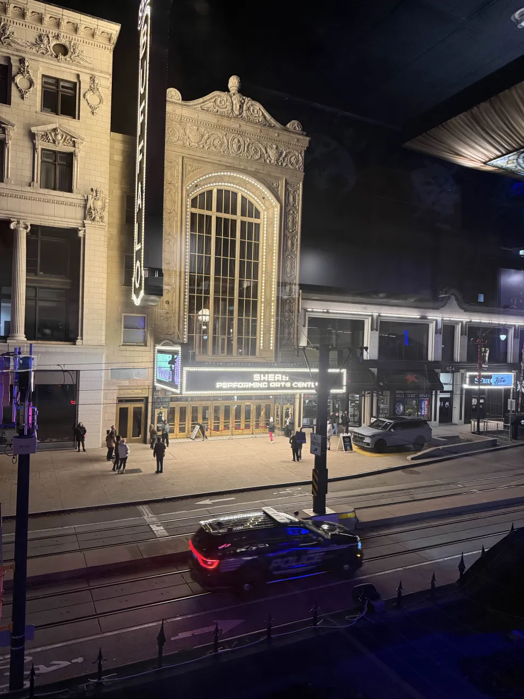
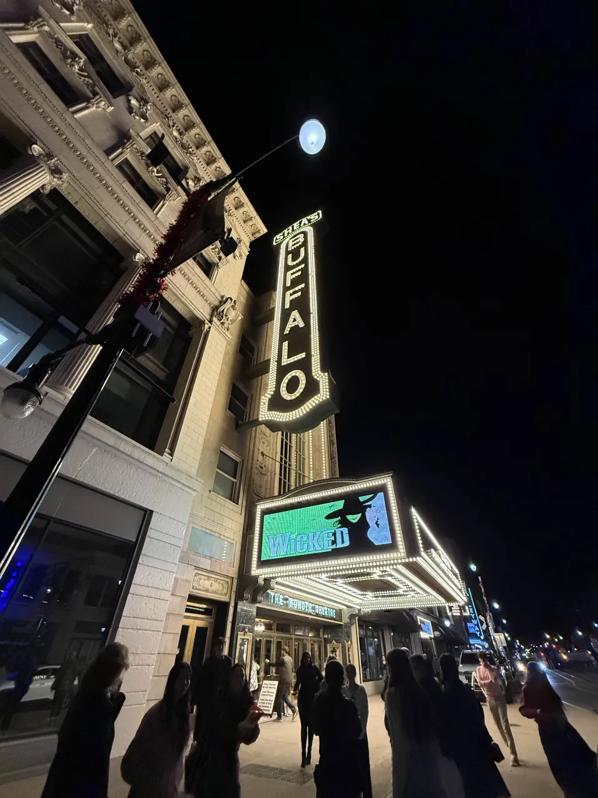
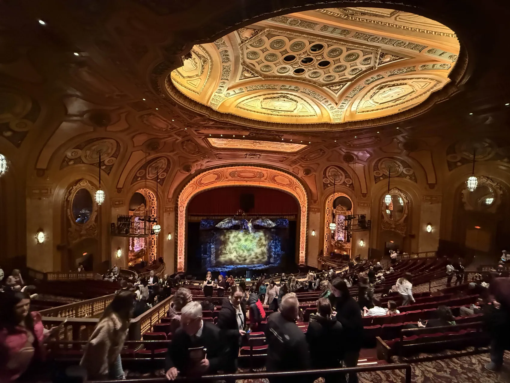
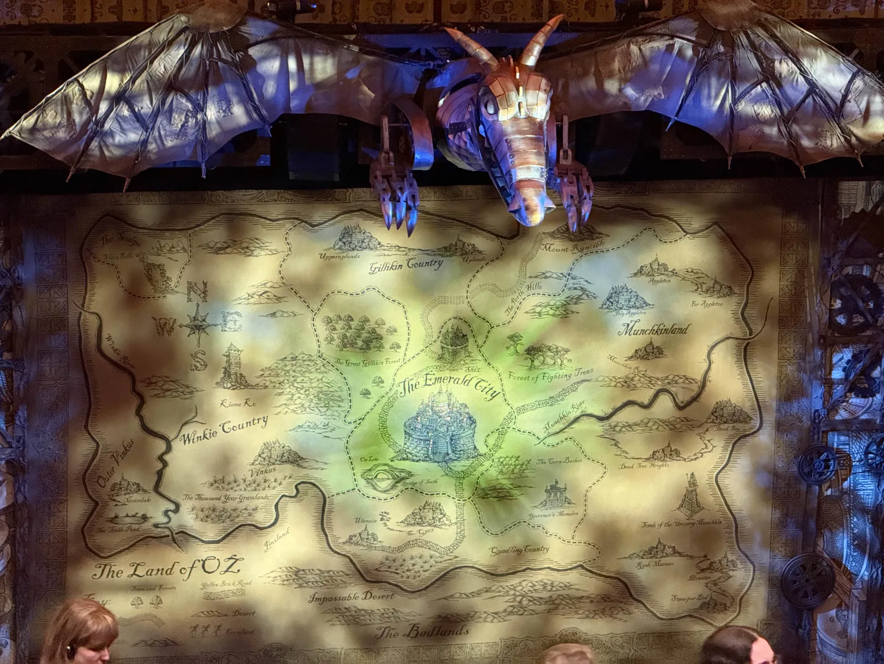
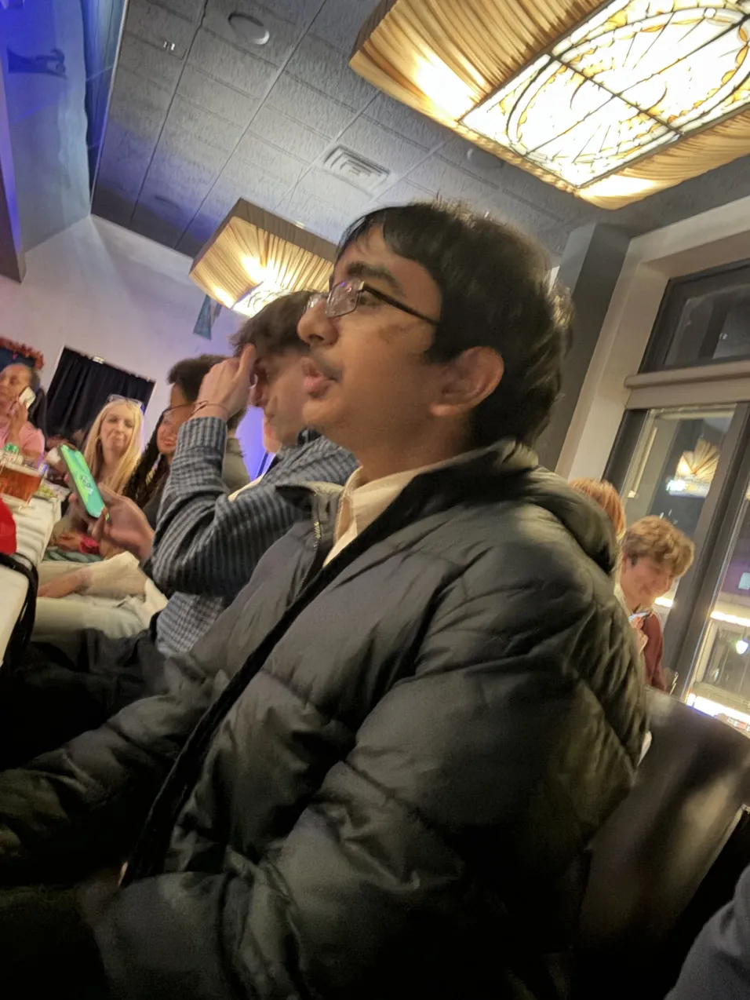
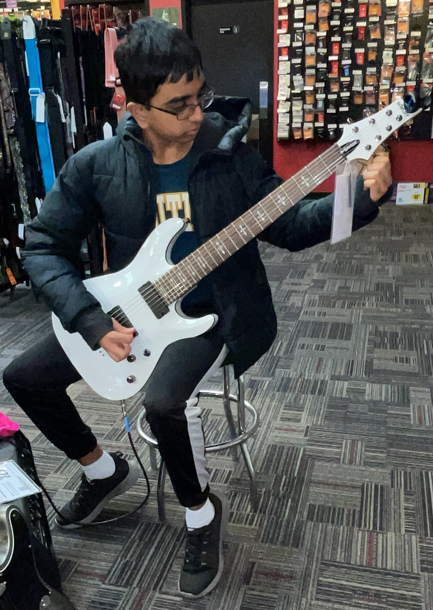

Play Review: Wicked at Shea's Performing Arts Center
The Wizard of Oz series is a long-time favorite of mine. I read it when I was a child, and I have loved it since.
I found all the characters included to be very creative and surprising, and reading it offered a story that was very amusing.
So, when my school’s music department offered an opportunity to see the play “Wicked”, a precursor to the Wizard of Oz series at
Shea’s Performing Arts Center in Buffalo, I knew I had to go. We bought tickets in October, and the trip was scheduled to be in November.
I knew that two movies on "Wicked" were made. However, I hadn’t really seen anything related to "Wicked" or gained any
experience with the play itself. I hoped that this experience would change that.
After we bought the tickets, the music department teachers notified us of the plan.
We were scheduled to leave on the bus on Wednesday at 4:30 PM. Then, we would be having dinner at Bijou Grill, which was directly
opposite from Shea’s. After that, we would cross the street and go to the theatre. We were scheduled to depart from Shea’s at around 10:30 PM
and then reach home by around 11:00 PM. I found out which of my friends were going to the play and was happy that I would have good company.
This fact also brought my hopes up and I assumed that this would be a great experience.
On Wednesday, November 19th, after school, we were to go to the play. First, I had to be at school at 4:30 PM.
I met up with some friends and checked in with the teachers. We waited around for everybody to arrive, and then were
assigned our buses by last name with two chaperones on each bus. After a 45-minute drive, we arrived in downtown Buffalo.
From there, we went to Bijou Grill for our scheduled dinner. There was a large upstairs reservation room where we were
scheduled to eat. The teachers told us that it would be buffet-style, so each table had to wait to get food.
Our table was called relatively early, so we could choose from all the food options. We had the options of grilled
chicken, pasta, and other vegetables with bread. The food was very subpar -- the grilled chicken was soggy,
the pasta underboiled with tomato sauce dumped over it, and the bread was hard. Other than that, the desserts
and vegetables were actually very filling. After everybody had eaten, we had to wait until 5:30 PM to cross the street to see the play.


As we filed into Shea’s Performing Arts Center, we received tickets from the teachers. We went up a huge ornate staircase to the play theater.
The theater was huge. It must have been over 100 feet high, and the roof and walls had interesting wooden patterns on them.
We were on the upper balcony, so we had a top-down view of the play. They already had props on the outside of the stages,
namely a large metal dragon whose eyes turned red at the start of the play.

The opening scenes were strong, introducing the main character, her sister, and her enemy.
The play’s main storyline was that there was a green witch with magical powers, Ephalba, and she met Glinda
the Good at a university. Previously enemies, they strike up a friendship and journey to the Emerald City. Ephalba discovers Oz’s fraudulent
ways and then becomes “evil” to stop his political control and imprisonment of animals. There were a lot of scenes where the characters
were seen to be “flying” or performing bizarre gymnastics, which piqued my interest a lot.

My least favorite scene was the introduction to the Emerald City. That scene had way too many flashing lights
and was not appropriate for that late in the night (around 10:00 PM).
Some dialogue and story did not make sense, as the main character and her love interest come back to life after seemingly being killed,
with no reason or explanation as to how this happened. After a mind-numbing two hours, the show came to a close.

There was an intermission in between where we could stretch our legs.
It lasted ten minutes -- there were some high priced concessions available, but I did not dare touch them.
Once we resumed, the second half of the play, was mostly straight forward and finally it was all over.
We checked in with our teachers and went outside the performing arts center.
The ride back was again 45 minutes to East High, and then we were driven home.
I was thoroughly tired that day and could not process anything that happened after.
After a good night's sleep, I thought about all the events that happened and the performance. I quite liked the plot of the play,
but I didn’t like the flashing lights and sounds. I admire the actors as they were constantly in character and
had a wide vocal range. The humor in the play was okay, but nothing I seriously laughed at. Overall, it was a very enlightening experience
for me to discover the world of acting and performance and how talented some individuals
are at playing a character and coordinating with each other to put on a stunning performance.
Biography

Agneya Dutta Pooleery is a freshman at East High School, Williamsville, NY.
He is a member of the student council and the jazz club in his school. He enjoys playing the classical and electric guitar,
violin in his school orchestra, biking, drawing, and programming. He also enjoys playing basketball with friends on the weekends.